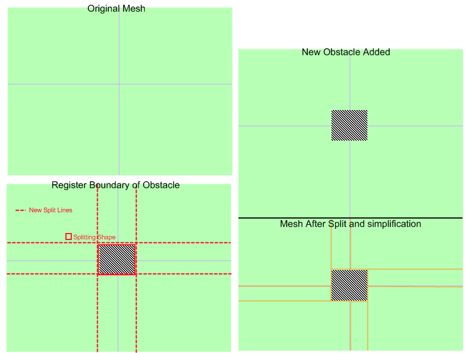
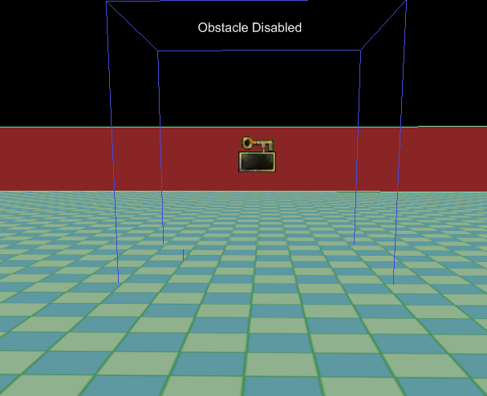

UDN
Search public documentation:
NavMeshDynamicObstacleSplittingCH
English Translation
日本語訳
한국어
Interested in the Unreal Engine?
Visit the Unreal Technology site.
Looking for jobs and company info?
Check out the Epic games site.
Questions about support via UDN?
Contact the UDN Staff
日本語訳
한국어
Interested in the Unreal Engine?
Visit the Unreal Technology site.
Looking for jobs and company info?
Check out the Epic games site.
Questions about support via UDN?
Contact the UDN Staff
导航网格物体动态障碍物分割技术概述
概述
在大多数情况下，能够基于动态改变的情况在运行时影响导航网格物体（以及 AI 导航的状态）是有用的。本文档概述了导航网格物体系统是如何完成这个功能的。
高级概述
基本的思想是 Interface_NavMeshPathObstacle 为用户提供一个用于指定 Navigation Mesh（导航网格物体）应该围绕其进行分割的形状。无论何时，当一个新的障碍物进入到游戏世界时，AI 需要围绕它进行导航，然后用户调用 RegisterObstacleWithNavMesh() 函数来决定现有网格物体的哪些多边形受到了这个障碍物的影响，并且如果需要，则围绕着提供的形状分割它们。

在图片中，由 4 个多边形组成默认网格物体被一个立方体形状的障碍物所分割。您的障碍物可以比这个更加复杂，甚至可以远离坐标轴。这里的唯一限制是所提供的形状必须是凸面的。层次结构
当网格物体被障碍物分割时，它真正做的是创建一个新的网格物体来代替现有的多边形。通过这种方式，它构成了一种层次，无论何时当 AI 使用受到影响的多边形时，都会参考这个层次。当寻路通过一个具有中间网格物体的多边形时，也会考虑子网格物体，并且在其上面进行寻路，而不是仅从该多边形的边缘进行寻路。根据需要构建
当 AI 需要通过一个被标记为受到障碍物影响的多边形时，如果那个多边形还没有围绕那个障碍物进行分割，那么将会在那时进行分割。这个过程不是在障碍物注册后立刻完成的。这从某种程度上缓解了障碍物注册的消耗。比如，如果您有一个需要频繁地注册及、取消注册到系统中的障碍物，那么仅当 AI 需要受到障碍物影响的网格物体数据时才处理这个障碍物的最昂贵的部分。 另外，只要多边形被分割了，那么将没有和寻路通过该几何体相关的额外的消耗。这意味着注册的障碍物仅会导致一次计算消耗。同样，因为没有改变网格物体的父项的结构，当移除障碍物时，网格物体返回到原始的构成结构实质上是没有性能消耗的。实现具体细节
寻路障碍物的一个简单实例是 NavMeshObstacle。 这里您将会看到一些用于 启用/禁用 障碍物的一些 kismet 逻辑，但是最有趣的部分是：
cpptext
{
/**
* 这个函数会产生 out_polyshape，它具有一系列的用于描述这个对象的凸面边界形状的顶点
* convex bounding shape
* @param out_PolyShape - 输出字符串，它包含了这个障碍物的边界多边形形状的顶点的缓冲数据
* @如果这个对象立即阻挡物体，那么返 TRUE（FALSE 意味着这个障碍物不影响网格物体）
*/
virtual UBOOL GetBoundingShape(TArray<FVector>& out_PolyShape);
virtual UBOOL PreserveInternalPolys() { return TRUE; }
}
这是世界中的一个障碍物，它还没有被注册到网格物体上。网格物体由一个大的内部放置了一个障碍物的多边形组成。

这是注册了障碍物并且分割网格物体（运行时）后网格物体的屏幕截图： 我们简单地介绍一下这个实例中对象定义的两个函数：
我们简单地介绍一下这个实例中对象定义的两个函数：
GetBoundingShape()
下面是对象的执行函数。
UBOOL ANavMeshObstacle::GetBoundingShape(TArray<FVector>& out_PolyShape)
{
out_PolyShape.AddItem(Location + FRotationMatrix(Rotation).TransformFVector(FVector(200.f,200.f,0.f)));
out_PolyShape.AddItem(Location + FRotationMatrix(Rotation).TransformFVector(FVector(-200.f,200.f,0.f)));
out_PolyShape.AddItem(Location + FRotationMatrix(Rotation).TransformFVector(FVector(-200.f,-200.f,0.f)));
out_PolyShape.AddItem(Location + FRotationMatrix(Rotation).TransformFVector(FVector(200.f,-200.f,0.f)));
return TRUE;
}
PreserveInternalPolys()
这个函数唯一做的事情是告诉分割过程障碍物中的几何体是否保持在原位。正如您从上面的屏幕截图中看到的，障碍物中的几何体保持在原位，并且和网格物体的其余部分相连接。 路径障碍物的最后一个重要的部分是在障碍物的内部及外部之间所添加的边的类型（仅适用于保留内部几何体的障碍物）。无论何时，当要在障碍物内部的多边形和障碍物外部的多边形之间建立一个链接（边）时，将会调用障碍物的 AddObstacleEdge() 函数来执行这个功能。
路径障碍物的最后一个重要的部分是在障碍物的内部及外部之间所添加的边的类型（仅适用于保留内部几何体的障碍物）。无论何时，当要在障碍物内部的多边形和障碍物外部的多边形之间建立一个链接（边）时，将会调用障碍物的 AddObstacleEdge() 函数来执行这个功能。
 这允许用户重写该行为，并添加适合于您的障碍物的任何类型的边。默认的行为是简单地添加一个正常的边，告诉所有 AI 它们可以在路径障碍物的内部和外部之间移动。当您进入或退出一个障碍物时，很多情况下您需要自定义行为，在这些情况下，您或许也需要执行 Inteface_NavMeshPathObject 函数。
这允许用户重写该行为，并添加适合于您的障碍物的任何类型的边。默认的行为是简单地添加一个正常的边，告诉所有 AI 它们可以在路径障碍物的内部和外部之间移动。当您进入或退出一个障碍物时，很多情况下您需要自定义行为，在这些情况下，您或许也需要执行 Inteface_NavMeshPathObject 函数。
与 Interface_NavMeshPathObject 结合使用
重写 AddObstacleEdge() 的最常见的一种情况是添加链接到路径对象的边。比如，您可以创建一个会执行 Interface_NavMeshPathObstacle 和 Interface_NavMeshPathObject 的障碍物。 为了解释为什么这是有用的，请考虑当关卡启动后在地面上喷出一滩油的情况。 对于我们的油坑，我们想获得以下效果：
- 我们需要静态网格物体围绕着油坑进行分割，从而为我们提供了我们使 AI 围绕油坑移动的间隔尺寸。
- 我们需要有一种方法来提供进行入到油坑的额外消耗，以便 AI 可以避开油坑。
- 执行函数 Interface_NavMeshPathObstacle::GetBoundingShape()
- 在适当的时间注册障碍物
- 重写 AddObstacleEdge() 来添加链接到油坑的边 PathObject，而不是添加正常的边。
- 执行函数 Interface_NavMeshPathObject::CostFor() （请参照路径对象文档）。
AddObstacleEdge()
我们没有详细讲述的唯一一个内容是 AddObstacleEdge() ，所以我们现在更加详细地解释一下这个函数。
/** * 当需要添加一个边来连接这个障碍物内部的一个多边形和障碍物外部的另一个多边形时调用这个函数 * 默认的行为仅是一个正常的边，重写它来添加特殊的消耗或行为（比如，链接 pathobject 到障碍物上） * @param Status - 边的当前状态（比如，仍然需要添加的内容） * @param inV1 - 边的第一个顶点的顶点位置 * @param inV2 - 边的第二个顶点的顶点位置 * @param ConnectedPolys - 这条边连接到的多边形 * @param bEdgesNeedToBeDynamic - 添加的边是否需要时动态的（比如，我们正在网格物体之间添加边） * @param PolyAssocatedWithThisPO - 连接的多边形数据参数的索引告诉我们该数组中的哪个多边形和这个路径对象相关联 * @返回枚举值，描述了发生了什么（我们采用的操作） – 用于决定其他障碍物及调用代码需要采取哪些伴随动作 */ virtual EEdgeHandlingStatus AddObstacleEdge( EEdgeHandlingStatus Status, const FVector& inV1, const FVector& inV2, TArray<FNavMeshPolyBase*>& ConnectedPolys, UBOOL bEdgesNeedToBeDynamic, INT PolyAssocatedWithThisPO);
EEdgeHandlingStatus IInterface_NavMeshPathObstacle::AddObstacleEdge( EEdgeHandlingStatus Status, const FVector& inV1, const FVector& inV2, TArray<FNavMeshPolyBase*>& ConnectedPolys, UBOOL bEdgesNeedToBeDynamic, INT PolyAssocatedWithThisPO)
{
return EHS_AddedNone;
}
EEdgeHandlingStatus UAIAvoidanceCylinderComponent::AddObstacleEdge( EEdgeHandlingStatus Status, const FVector& inV1, const FVector& inV2, TArray<FNavMeshPolyBase*>& ConnectedPolys, UBOOL bEdgesNeedToBeDynamic, INT PolyAssocatedWithThisPO)
{
// 如果在我们想添加边的方向已经有了一个边，那么可能会有一个冲突的 pathobstacle（例如，将我们与
// 另一个已经添加了一条边的障碍物孤立起来.. 所以就放弃）
if(Status == EHS_AddedBothDirs)
{
return Status;
}
// 如果已经有一个边缘点从另一个多边形指回这个 PO，那么放弃
if( (PolyAssocatedWithThisPO == 0 && Status == EHS_Added1to0) ||
(PolyAssocatedWithThisPO == 1 && Status == EHS_Added0to1) )
{
return Status;
}
TArray<FNavMeshPolyBase*> ReversedConnectedPolys=ConnectedPolys;
// 所以我们需要添加一个指回到和这个 PO 相关的多边形的边，所以如果需要，可以调换顺序
if(PolyAssocatedWithThisPO == 0)
{
ReversedConnectedPolys.SwapItems(0,1);
}
UNavigationMeshBase* Mesh = ReversedConnectedPolys(0)->NavMesh;
if( Mesh == NULL )
{
return Status;
}
// 向网格物体添加边
TArray<FNavMeshPathObjectEdge*> CreatedEdges;
Mesh->AddDynamicCrossPylonEdge<FNavMeshPathObjectEdge>(inV1,inV2,ReversedConnectedPolys,TRUE, &CreatedEdges);
// 获得到边的引用，并将它绑定到这个 pathobject 上
FNavMeshPathObjectEdge* NewEdge = (CreatedEdges.Num() > 0) ? CreatedEdges(0) : NULL;
checkSlowish(CreatedEdges.Num() <2);
if(NewEdge == NULL)
{
return Status;
}
// 将新的边绑定到这个回避体积上
if(NewEdge != NULL)
{
NewEdge->PathObject = GetOwner();
NewEdge->InternalPathObjectID = 0;
}
// 意味着我们从目标多边形到源多边形之间添加了一个边
if(Status == EHS_AddedNone)
{
if(PolyAssocatedWithThisPO == 0)
{
return EHS_Added1to0;
}
else
{
return EHS_Added0to1;
}
}
else
{
// 如果我们到了这步，意味着某人已经在相反的方向已经添加了一个边
return EHS_AddedBothDirs;
}
}